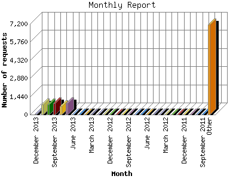

The Monthly Report identifies activity for each month in the report
time frame. Remember that each page hit can result in several server requests
as the images for each page are loaded.
Note: Depending on the
report time frame, the first and last months may not represent a complete
month's worth of data, resulting in lower hits.

| Month | Number of requests | Number of page requests | |
|---|---|---|---|
| 1. | July 2010 | 323 | 215 |
| 2. | August 2010 | 550 | 382 |
| 3. | September 2010 | 360 | 235 |
| 4. | October 2010 | 328 | 237 |
| 5. | November 2010 | 466 | 343 |
| 6. | December 2010 | 474 | 302 |
| 7. | January 2011 | 408 | 280 |
| 8. | February 2011 | 482 | 318 |
| 9. | March 2011 | 454 | 331 |
| 10. | April 2011 | 649 | 422 |
| 11. | May 2011 | 1,046 | 647 |
| 12. | June 2011 | 1,174 | 654 |
| 13. | July 2011 | 432 | 334 |
| 14. | August 2011 | 0 | 0 |
| 15. | September 2011 | 0 | 0 |
| 16. | October 2011 | 0 | 0 |
| 17. | November 2011 | 0 | 0 |
| 18. | December 2011 | 0 | 0 |
| 19. | January 2012 | 0 | 0 |
| 20. | February 2012 | 0 | 0 |
| 21. | March 2012 | 0 | 0 |
| 22. | April 2012 | 0 | 0 |
| 23. | May 2012 | 0 | 0 |
| 24. | June 2012 | 0 | 0 |
| 25. | July 2012 | 0 | 0 |
| 26. | August 2012 | 0 | 0 |
| 27. | September 2012 | 0 | 0 |
| 28. | October 2012 | 0 | 0 |
| 29. | November 2012 | 0 | 0 |
| 30. | December 2012 | 0 | 0 |
| 31. | January 2013 | 0 | 0 |
| 32. | February 2013 | 0 | 0 |
| 33. | March 2013 | 0 | 0 |
| 34. | April 2013 | 0 | 0 |
| 35. | May 2013 | 0 | 0 |
| 36. | June 2013 | 0 | 0 |
| 37. | July 2013 | 883 | 717 |
| 38. | August 2013 | 683 | 579 |
| 39. | September 2013 | 897 | 670 |
| 40. | October 2013 | 814 | 652 |
| 41. | November 2013 | 821 | 679 |
| 42. | December 2013 | 70 | 49 |
Most active month July 2013 : 717 pages sent. 1,174 requests handled.
Monthly average: 423 pages sent. 595 requests handled.
This report was generated on December 12, 2013 06:01.
Report time frame July 20, 2010 15:14 to December 10, 2013 23:07.
| Web statistics report produced by: analog 6.0 / Report Magic 2.21 |